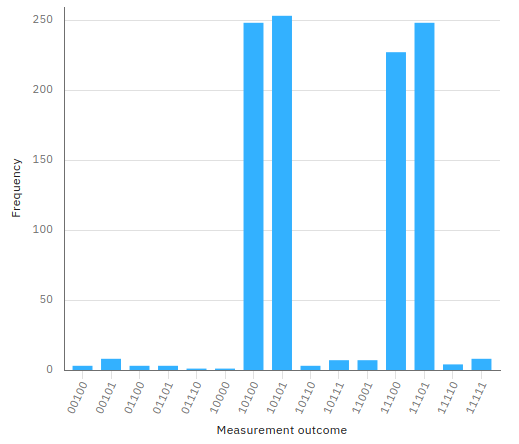

Cascade Hadamard Gates
The Hadamard gate applied to a qubit with an initial value that is $|0\rangle$ or $|1\rangle$ brings the qubit itself into an superposition state so that
making a measurement (and therefore the collapse of the wave function) you get the result of 0 or 1 with the same probability.
Thinking classically we could think that the application of a Hadamard gate and a following measure is like the launch of a coin where the probability that it comes out
heads (or tails) is 50%. Continuing the comparison, raising the coin in the air a second time and going to look at the result, it is trivially deduced that the probability
getting heads (or tails) is always 50%. In other words, a second throw does not change the probability distribution of the result compared to the case of a single throw.
Instead in the quantum world this comparison is misleading, in fact the second application of the Hadamard gate brings the state of the qubit back to the value before the first application.
This post shows how in quantum computing is better to model mathematically the operators' behavior without venturing into risky comparisons with the macroscopic world.
The mathematical model of the qubit
The qubit is mathematically described as a two-dimensional complex Hilbert space. The canonical basis of this space is indicated (using Dirac's notation) with
$$\{|0\rangle,|1\rangle\}$$
which written in the form of the base of the component vector is
$$\{\begin{bmatrix} 1 \\ 0 \\ \end{bmatrix},\begin{bmatrix} 0 \\ 1 \\ \end{bmatrix}\}$$
and each element of the base corresponds respectively to the classic bits 0 and 1.
As with any vector space, each vector of the space vector can be uniquely written as a linear combination of the base vectors
$$|\psi\rangle=\alpha|0\rangle + \beta|1\rangle$$
and quantum mechanics says that if you make a measurement (relative to the base) you can only get the state $|0\rangle$ (corresponding to bit 0)
with $|\alpha|^2$ probability or the state $|1\rangle$ (corresponding to bit 1) with $|\beta|^2$ probability.
The mathematical model of the Hadamard gate
The Hadamard gate is mathematically modeled by the following matrix $$H=\frac{1}{\sqrt{2}} \left[\begin{matrix} 1 & 1 \\ 1 & -1 \end{matrix} \right]$$ Applying $H$ to the vector of the components of $|0\rangle$ you get $$\frac{1}{\sqrt{2}} \left[\begin{matrix} 1 & 1 \\ 1 & -1 \end{matrix} \right] \begin{bmatrix} 1 \\ 0 \\ \end{bmatrix}=\frac{1}{\sqrt{2}}\begin{bmatrix} 1 \\ 1 \\ \end{bmatrix}$$ which corresponds in the initial vector space to the vector expressed by the linear combination $$\frac{|0\rangle + |1\rangle}{\sqrt{2}}$$ and as stated above, if a measurement is made, the probability of getting $|1\rangle$ is $|\beta|^2=(|1/\sqrt2|)^2=(1/\sqrt2)^2=1/2$. Consequently, the probability of getting $|0\rangle$ is also equal to $1/2$.
Applying $H$ to the vector of the components of $|1\rangle$ you get $$\frac{1}{\sqrt{2}} \left[\begin{matrix} 1 & 1 \\ 1 & -1 \end{matrix} \right] \begin{bmatrix} 0 \\ 1 \\ \end{bmatrix}=\frac{1}{\sqrt{2}}\begin{bmatrix} 1 \\ -1 \\ \end{bmatrix}$$ which corresponds in the initial vector space to the vector expressed by the linear combination $$\frac{|0\rangle - |1\rangle}{\sqrt{2}}$$ and as stated above, if a measurement is made, the probability of getting $|1\rangle$ is $|1\rangle$ is $|\beta|^2=(|-1/\sqrt2|)^2=(1/\sqrt2)^2=1/2$. Consequently, the probability of getting $|0\rangle$ is also equal to $1/2$.
The double application of Hadamard gate
Note that the $H$ matrix modeling the Hadamard gate is hermetian and unitary.
It is hermetian because its conjugate transpose coincides with the matrix itself,
in fact exchanging the rows with the columns and inverting the signs of the imaginary parts (which are missing)
$$H=\frac{1}{\sqrt{2}} \left[\begin{matrix} 1 & 1 \\ 1 & -1 \end{matrix} \right]$$
you get always
$$H^\dag=\frac{1}{\sqrt{2}} \left[\begin{matrix} 1 & 1 \\ 1 & -1 \end{matrix} \right]$$
which is precisely the starting matrix $H$.
It is unitary because its conjugate transpose coincides with its inverse.
Meanwhile, observe that
$$H^{-1}=\frac{1}{\sqrt{2}} \left[\begin{matrix} 1 & 1 \\ 1 & -1 \end{matrix} \right]=H$$
and verification is a simple calculation
$$H^{-1}H=\frac{1}{\sqrt{2}} \left[\begin{matrix} 1 & 1 \\ 1 & -1 \end{matrix} \right] \frac{1}{\sqrt{2}} \left[\begin{matrix} 1 & 1 \\ 1 & -1 \end{matrix} \right]=\frac{1}{2} \left[\begin{matrix} 2 & 0 \\ 0 & 2 \end{matrix} \right] = \left[\begin{matrix} 1 & 0 \\ 0 & 1 \end{matrix} \right] = I$$
Applying the equivalence $$HH=HH^{-1}=HH^\dag=I$$ for each vector
(using the associative property of the matrix product) $|\psi\rangle$
$$HH|\psi\rangle=I|\psi\rangle=|\psi\rangle$$
and therefore the double application of a Hadamard gate in cascade brings the system to the state before the first application.
The quantum circuit
Having shown that the double application of a Hadamard gate is equivalent to the application of the identity matrix,
trivially applies, as a particular case, the equivalences
$HH|0\rangle=I|0\rangle=|0\rangle$ and $HH|1\rangle=I|1\rangle=|1\rangle$.
The quantum circuit

QASM code
The following program is the translation in QASM language of the circuit illustrated above; this program has been tested both on IBM's quantum computer 'ibmq_london' and on the IBM 'qasm_simulator' simulator.
include "qelib1.inc";
qreg q[5];
creg c[5];
h q[0];
h q[1];
h q[1];
x q[2];
x q[3];
h q[3];
x q[4];
h q[4];
h q[4];
measure q[0] -> c[0];
measure q[1] -> c[1];
measure q[2] -> c[2];
measure q[3] -> c[3];
measure q[4] -> c[4];Python with Qiskit code
The following program is the translation in Python with Qiskit of the circuit shown above; this program was tested inside a Jupyter Notebook using as backend both IBM's quantum computer 'ibmq_london' and IBM's 'qasm_simulator' simulator.
q = QuantumRegister(5, 'q')
c = ClassicalRegister(5, 'c')
circuit = QuantumCircuit(q, c)
circuit.h(q[0])
circuit.h(q[1])
circuit.h(q[1])
circuit.x(q[2])
circuit.x(q[3])
circuit.h(q[3])
circuit.x(q[4])
circuit.h(q[4])
circuit.h(q[4])
circuit.measure(q, c)Microsoft Q# .NET Core code for quantum simulator
The following program is the Microsoft Q# translation of the circuit shown above; this program has been tested on a Linux with .NET Core, Q# runtime and Microsoft quantum simulator installed.
namespace ComputationalMindset.QuantumExperiments
open Microsoft.Quantum.Intrinsic;
open Microsoft.Quantum.Canon;
open Microsoft.Quantum.Measurement;
operation CascadeHadamardGates() : (Result, Result, Result, Result, Result)
{
using (q = Qubit[5])
{
H(q[0]);
H(q[1]);
H(q[1]);
X(q[2]);
X(q[3]);
H(q[3]);
X(q[4]);
H(q[4]);
H(q[4]);
let result = (M(q[0]), M(q[1]), M(q[2]), M(q[3]), M(q[4]));
ResetAll(q);
return result;
}
}
Results on IBM Q Experience
Both programs for IBM Q Experience were executed with a number of shots equals to 1024 both on the IBM's simulator 'qasm_simulator' and on the real computer IBM's 'ibmq_london'
obtaining the expected result, ie the bits 1, 2 and 4 are constants (their measured values is always respectively 0, 1 and 1).
The bits 0 and 3 combine in the 4 pairs 00 01 10 and 11 each with 25% probability.
The imperfect uniformity shown in the case of real quantum computers compared to simulators is due to noise.
Note: Given the stochastic nature of this code, your specific results may vary. Consider running the example a few times.

QASM program execution result on IBM simulator 'qasm_simulator'

QASM program execution result on IBM real quantum computer 'ibmq_london'

Python + Qiskit program execution result on IBM simulator 'qasm_simulator'

Python + Qiskit program execution result on IBM real quantum computer 'ibmq_london'
Results on Microsoft simulator
The execution of the Q# program for .NET Core produced the expected result, i.e. the following distribution:
Note: Given the stochastic nature of this code, your specific results may vary. Consider running the example a few times.
| Measure | Count | Probability (%) |
|---|---|---|
| 10100 | 243 | 23.74% |
| 10101 | 271 | 26.46% |
| 11100 | 251 | 24.51% |
| 11101 | 259 | 25.29% |
| All other combinations are zero | ||
| Total: | 1024 | 100.00% |
Q# program result on Linux with .NET Core and Microsoft quantum simulator
Download of the complete code
The complete code is available at GitHub.
These materials are distributed under MIT license; feel free to use, share, fork and adapt these materials as you see fit.
Also please feel free to submit pull-requests and bug-reports to this GitHub repository or contact me on my social media channels available on the top right corner of this page.